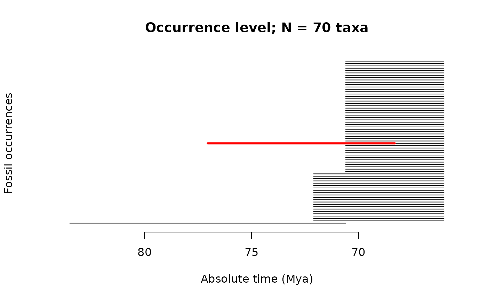
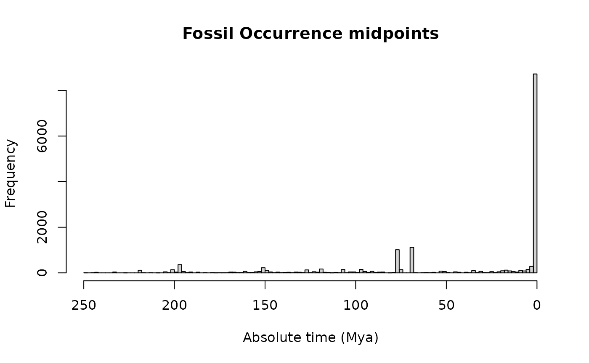
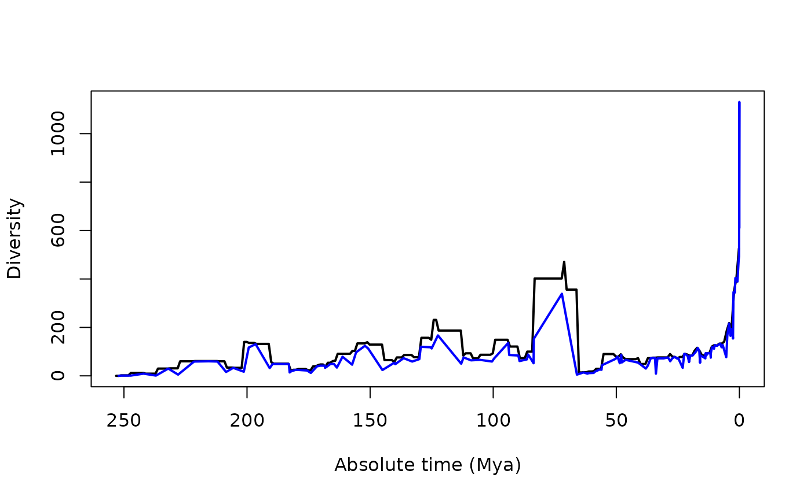
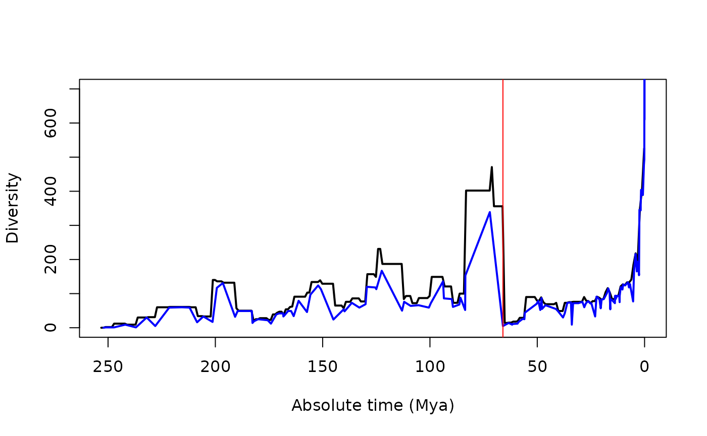
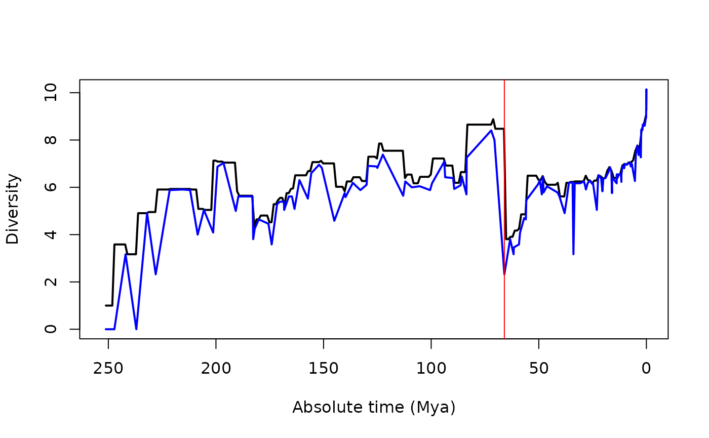
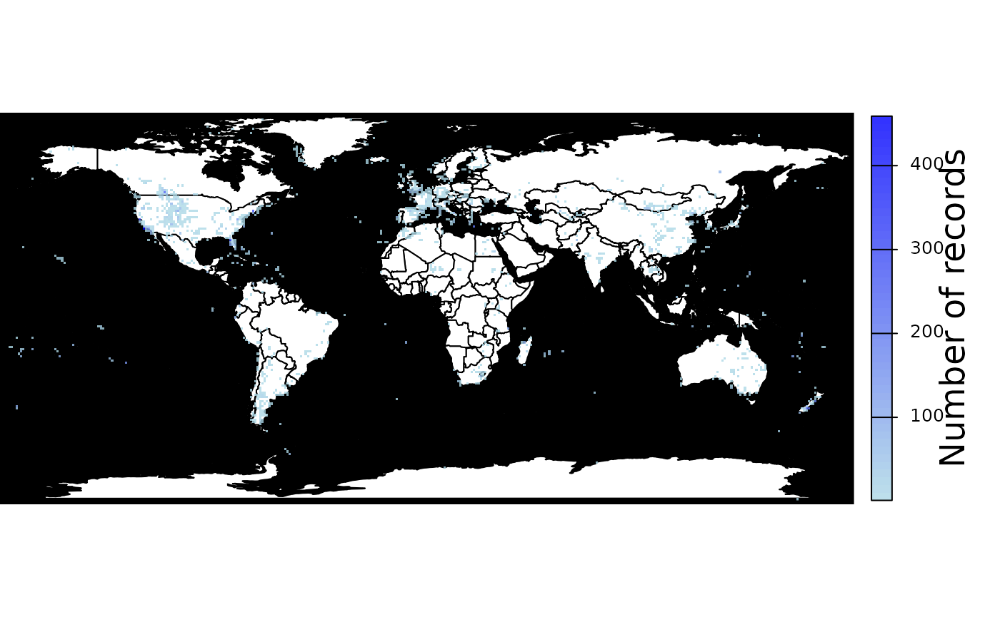
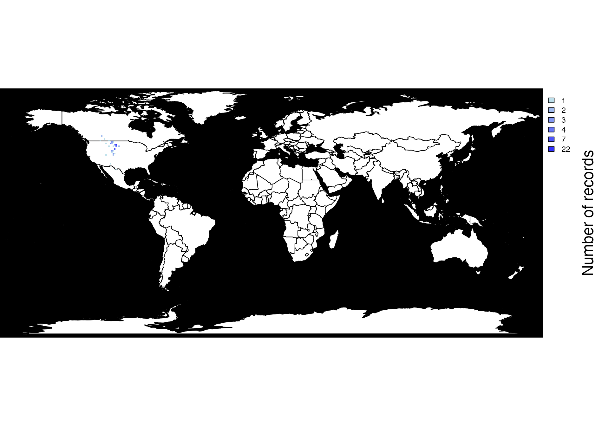

Introduction to the fossil record
Matheus Januario, Andressa Viol, and Daniel Rabosky
Jan 2024
Source:vignettes/deeptime_rocks.Rmd
deeptime_rocks.RmdLearning objectives
- Exploring fossil occurrences
- Diversity patterns in deep time
- The spatial distribution of the record
- Drawing conclusions from the fossil record
- Technical note: Dating fossils in absolute time
Introduction
Thus far, we’ve been typically dealing with evolutionary processes that occur over short timescales – mostly not more than a few hundred generations. But this generational scale of evolutionary change pales in comparison to the vastness of geological time. In this lab, we will explore the evolutionary history of clades through tens (sometimes hundreds) of millions of years, via the major source of direct evidence on deep time: the fossil record.
For this tutorial, you must install the palebioDB R
package.
install.packages("paleobioDB")Then, load all packages required into your workspace:
Exploring fossil occurrences
We’ve downloaded a fossil dataset for you to work with today
(dinos_fossil). All occurrence data were originally
obtained from the Paleobiology database, a free-to-use resource that is
the standard repository for such data and which has been used by
hundreds or thousands of researchers to study the history and dynamics
of biodiversity in deep time.
We kept as many occurrences as possible from the original datasets, but removed some extraneous data (e.g. notes on preservation, notes on the paleoenvironment, the original reference for the data, etc.) to make them easier to use. We also removed occurrences with poor time resolution (i.e., the timespan between the maximum and minimum ages of the strata associated with that fossil), and we removed all fossil occurrences not identified to the species level.
To illustrate what these data look like, let’s read and view part of the dinosaur occurrence data. First, we’ll read the file:
data("dinos_fossil")Then, we’ll check the basic properties of the dinos
dataframe:
dim(dinos_fossil)## [1] 15527 13You can see that there are 15527 rows (each row is an occurrence) and 13 columns (each column is an attribute of each occurrence).
So what are these columns?
colnames(dinos_fossil) ## [1] "phylum" "class" "order" "family"
## [5] "genus" "species" "early_interval" "late_interval"
## [9] "max_ma" "min_ma" "midpoint" "lng"
## [13] "lat"It is always good to check the rows and columns (as we just did) to verify that data were correctly loaded.
In our data, we see columns for:
phylum,
class,
order,
family,
genus,
species = The taxon associated with that
occurrence for that hierarchical level.
early_interval,
late_interval = The name of the early
(furthest from present) and the name of the late (closest to present)
intervals associated with that occurrence. Some of those intervals
appear in the GSA geologic timescale (link
here).
min_ma,
max_ma = The maximum (oldest; farthest in
time from the present) and minimum (youngest; closest to present) ages
associated with that occurrence. Note that these ages are in units of
millions of years ago (abbreviated to “mya”), in absolute time.
midpoint = The date (in millions of
years ago) of the exact halfway point of the interval the fossil was
found in. We will explain this variable a bit further in this
tutorial.
lng, lat
= The longitude and latitude of the location the fossil was found in.
These coordinates are for the fossil’s location in the present.
The “paleo” latitude and longitude (which we removed prior to loading
the data in the package) of each fossil occurrence would be an estimate
of the location where that organism actually lived, given what we know
about plate tectonics and the age of the fossil.
More on how fossil dating works (i.e., how we can determine
min_ma and
max_ma) and its limitations are in the
technical note “Dating fossils in absolute time” at the end of this
tutorial.
Now, using the function head(), we can view the first
n rows of the dataset:
head(dinos_fossil, n = 5)## phylum class order family
## 1 Chordata Ornithischia NO_ORDER_SPECIFIED Chaoyangsauridae
## 2 Chordata Saurischia Avetheropoda NO_FAMILY_SPECIFIED
## 3 Chordata Saurischia Avetheropoda NO_FAMILY_SPECIFIED
## 4 Chordata Saurischia Avetheropoda Tyrannosauridae
## 5 Chordata Saurischia Avetheropoda Tyrannosauridae
## genus species early_interval late_interval
## 1 Chaoyangsaurus Chaoyangsaurus youngi Late Tithonian Valanginian
## 2 Protarchaeopteryx Protarchaeopteryx robusta Late Barremian Early Aptian
## 3 Caudipteryx Caudipteryx zoui Late Barremian Early Aptian
## 4 Gorgosaurus Gorgosaurus libratus Late Campanian
## 5 Gorgosaurus Gorgosaurus libratus Late Campanian
## max_ma min_ma midpoint lng lat
## 1 150.8 132.90 141.85 123.9667 42.93330
## 2 130.0 122.46 126.23 120.7333 41.80000
## 3 130.0 122.46 126.23 120.7333 41.80000
## 4 83.5 70.60 77.05 -111.5287 50.74073
## 5 83.5 70.60 77.05 -111.5493 50.73701You will notice that the head() output wraps around your
console output screen because it is too wide to be displayed in one
viewing frame. The functions dim(),
colnames(), and head() are useful for
inspecting the datasets that you’ve loaded.
The exercises below use the dinosaur data for illustrative purposes, but the functions we’ve provided (and associated exercises) will work for any of the other datasets (trilobites, ammonites, mammals).
As a warm-up, let’s count how many occurrences there are for a famous dinosaur genus, like Majungasaurus. An interesting quick note here is that there is a Majungasaurus full skeleton reconstruction in the University of Michigan Museum of Natural History that anyone can visit.
sum(dinos_fossil$genus == "Majungasaurus")## [1] 25Now let’s try its more famous relative, the T-rex. How many occurrences of T-rex are there in our dataset?
sum(dinos_fossil$species == "Tyrannosaurus rex")## [1] 70Important to consider: most of what we know about the T-rex comes from these 70 fossil specimens!
A brief introduction to temporal ranges
When we are able to date both time boundaries of a rock section, we can determine the midpoint age of that rock section, which marks the exact halfway point of the interval.
To illustrate this, we will take a closer look at the fossil occurrences of Tyranossaurus rex. First, let’s make a copy of these occurrences and assign them to a new R object.
Trex <- dinos_fossil[dinos_fossil$species == "Tyrannosaurus rex",]
#this still has the same columns as the dinosaur dataset:
colnames(Trex)## [1] "phylum" "class" "order" "family"
## [5] "genus" "species" "early_interval" "late_interval"
## [9] "max_ma" "min_ma" "midpoint" "lng"
## [13] "lat"Now, let’s look at these occurrences.
plotRawFossilOccs(Trex, use.midpoint = F, knitr = T)In the above plot, each horizontal black line segment represents a fossil occurrence. The leftmost end of the line segment represents the maximum (oldest) estimated age of that occurrence, and the rightmost end of the line segment represents the minimum (youngest) estimated age of that occurrence. Thus, each segment captures the full temporal range of possible ages for that fossil occurrence. Because there are 70 total occurrences for T-rex, there are 70 line segments.
Looking at these occurrences, do you think that T-rex actually appeared at the maximum age of the oldest occurrence (the bottommost line segment that spans from 83.5 Ma to 70.6 Ma)?
Instead of plotting the early and late boundaries of the stages in which a species occurs, we can get a more reasonable duration for the T-rex by considering just the time spanning the earliest and latest midpoints of all of the occurrences.
Let’s re-draw the fossil record of the T-rex, but this time let’s only use the midpoints of the fossil occurrences to see if we can get a better idea of the actual duration of this species.
plotRawFossilOccs(Trex, use.midpoint = F, knitr = T)
segments(x0 = min(Trex$midpoint),
x1 = max(Trex$midpoint),
y0 = 35, y1 = 35, lwd=3, col="red"
)
What do you think? Is this a better approximation of the length of time in which T-rex lived (its “temporal range”)? This is not a graded question, but discuss this with your fellow students or your GSI for a moment.
There are many ways to try to reconstruct ages or temporal ranges of species from the fossil record. All of those reconstructions will present some amount of error, and this error will be smaller for fossil records that have better time resolution. The main caveats of these techniques are:
- We still do not know the exact date of the appearance or extinction of a taxon (!)
- Taxa with fossils that are all dated to the same stage do not have temporal ranges (see taxa B and F in panels I and II in fig 1 below), and it is therefore difficult to know when exactly within that stage they lived, and consequently with whom they co-occurred.
- Imprecisely-dated occurrences can still influence our midpoint technique (for instance, look at how much the temporal range of the T-rex is affected by just one occurrence).
Problems associated with the midpoint technique can be gleaned from comparing panels I and II in figure 1.
For the purposes of this lab, we will assume that reconstructing ages using the interval between midpoints, as we did above for the T-rex, is good enough.
Now we will plot ALL of the dinosaurs in our dataset, estimating their temporal range (with error) with their interval midpoints. Each species will be a horizontal line in this graph.
plotRawFossilOccs(dinos_fossil, tax.lvl = "species", knitr = T)How will the record look if, instead of looking at the species level, we plot the temporal ranges at the taxonomic level of family (even having all the uncertainties mentioned above)?
plotRawFossilOccs(dinos_fossil, tax.lvl = "family", knitr = T)What about the taxonomic order level?
plotRawFossilOccs(dinos_fossil, tax.lvl = "order", knitr = T)And, maybe more interesting: why do so many species (and, an even higher proportion of higher taxonomic levels) disappear abruptly around 66 Mya?
The K-Pg mass extinction
The K-Pg mass extinction was caused by the collision of a bolide with Earth. We can date this event relatively precisely because the magnitude of the impact left a very conspicuous layer of iridium (a mineral that is rare on Earth, but very common in meteors) throughout our planet. Because of these characteristics, we can securely conclude that the K-Pg mass extinction occurred 66 million years ago. We can annotate the K-Pg mass extinction event in the plot we made by using the function:
abline(v = 66)
The pull of the recent
One question we might make is: what is the temporal pattern of fossil preservation? Does it change across millions of years? We can quickly (and very superficially) test this by plotting a histogram of fossil occurrence midpoints.
hist(dinos_fossil$midpoint,
breaks=100, #increasing breaks to see data in a better precision
xlab="Absolute time (Mya)", main = "Fossil Occurrence midpoints",
#reversing axis to represent past -> present
xlim=c(rev(range(dinos_fossil$midpoint)))
)
Paleontologists call this increase in fossil preservation towards the present the “pull of the recent”.
It is reasonable to imagine that not every species that has ever existed left a fossil. How can we quantify the fraction of species that become fossils? To estimate this, we will look at the number of current dinosaur species (a.k.a. birds; species list from Jetz et al, 2012) that have left at least one fossil occurrence.
# first we load the species list:
data("birds_spp")
# then we count the number of extant dinosaurs within our fossil dataset:
n_fossilized_dinos <- sum(birds_spp %in% dinos_fossil$species)
#then we calculate the proportion:
n_fossilized_dinos/length(birds_spp)## [1] 0.1139798Diversity patterns in deep time
We can use two simple methods to calculate diversity curves in the fossil record (see fig 1-III):
The standard method, which simply sums up taxa that occur in the same interval, and thus calculates the diversity within each interval.
The range-through method, which only sums up species that are observed before and after a given stratigraphic interval, and thus calculates the diversity at interval boundaries. This method guarantees we are measuring diversity that co-occurs in time.
Both methods interpolate (“fill in”) gaps in a species’ fossil record between occurrences, by counting a species as being present in any interval that is between the first and last fossil occurrences (FAD and LAD, respectively). Meaning: an interval that does not have an occurrence, but that is between the first and last intervals containing occurrences, is counted as containing that species; see taxon D in Figure 1 for a visual example.
The function calcFossilDivTT do these calculations for
you, and you can use the argument method to decide which
method will be employed.
# This line calculates diversity through the standard method:
SM <- calcFossilDivTT(dinos_fossil, method = "stdmethod")
# and this one calculates diversity using the range-through method:
RG <- calcFossilDivTT(dinos_fossil, method = "rangethrough")
# Now we can create an empty plot to store our estimates:
plot(NA,
xlim=rev(range(c(RG$age, SM$age))),
ylim=range(c(RG$div, SM$div)),
xlab="Absolute time (Mya)",
ylab="Diversity"
)
# and then add the standard method diversity:
lines(x=SM$age, y = SM$div, type = "l", lwd=2)
# and finally add the range-through diversity:
lines(x=RG$age, y = RG$div, type = "l", col="blue", lwd=2) 
As you can see, even when we calculate diversity through corrected methods, the pull of the recent still distorts our perception of diversity trends: the number of bird fossils increases our diversity line so much that it limits our ability to visualize changes deeper in the past. We can account for this in two ways.
The first and simpler way is to manually restrict our y-axis. We will also add a mark representing the time of the K-Pg mass extinction with a red vertical line in the following plot.
#Creating a plot:
plot(NA,
xlim=rev(range(c(RG$age, SM$age))),
ylim=c(0,700), # here is the part of the code I changed, in
# comparison with the former chunk of code
xlab="Absolute time (Mya)",
ylab="Diversity"
)
# adding the standard method diversity:
lines(x=SM$age, y = SM$div, type = "l", lwd=2)
# adding the range-through diversity:
lines(x=RG$age, y = RG$div, type = "l", col="blue", lwd=2)
# Here, red line marks the K-Pg mass extinction:
abline(v=66, col="red")
Instead of restricting our y-axis, we could use the log scale to highlight proportional changes in diversity. In the below plot, we will plot species richness in log base 2. This means every increment of 1 unit on the log scale equals doubling the number of species, and each unit decrease on this scale equals halving the number of species.
# Plotting again our diversity curves (note
# this is exactly what we did in the previous section), but in log scale
plot(NA,
xlim=rev(range(c(RG$age, SM$age))),
ylim=range(c(0, max(log(c(RG$div, SM$div), base = 2)))), # note the base 2
xlab="Absolute time (Mya)",
ylab="Diversity")
# adding the standard method diversity:
lines(x=SM$age,
y = log(SM$div, base=2),
type = "l", lwd=2)
# adding the range-through diversity:
lines(x=RG$age,
y = log(RG$div, base = 2),
type = "l", col="blue", lwd=2)
# Here, red line marks the K-Pg mass extinction:
abline(v=66, col="red")
The spatial distribution of the record
The density of fossil occurrences also varies in space. We can plot
this unevenness using the function pbdb_map_occur from the
paleobioDB R package.
# Plotting number of occurrences in space:
# you can change the size of the cells using the argument "res"
pbdb_map_occur(dinos_fossil, res = 1, cex = 0.3)
## class : SpatRaster
## size : 169, 370, 1 (nrow, ncol, nlyr)
## resolution : 1, 1 (x, y)
## extent : -180, 190, -85.19218, 83.80782 (xmin, xmax, ymin, ymax)
## coord. ref. : lon/lat WGS 84 (CRS84) (OGC:CRS84)
## source(s) : memory
## name : sum
## min value : 1
## max value : 459Just as a curiosity, we can also plot the spatial distribution of the T-rex using the dataset we created earlier in this tutorial.
pbdb_map_occur(Trex, res = 1, cex=0.7)
## class : SpatRaster
## size : 169, 370, 1 (nrow, ncol, nlyr)
## resolution : 1, 1 (x, y)
## extent : -180, 190, -85.19218, 83.80782 (xmin, xmax, ymin, ymax)
## coord. ref. : lon/lat WGS 84 (CRS84) (OGC:CRS84)
## source(s) : memory
## name : sum
## min value : 1
## max value : 22Drawing conclusions from the fossil record
In this tutorial, we briefly explored the fossil record of dinosaurs only, but we gave you 3 other datasets: Trilobites, Mammals, and Ammonites.
Explore them using the same set of functions and techniques that we used above, and then answer:
Apart from the incompleteness of the record, you may have realized that another layer of complexity in the fossil record is the lack of temporal resolution most fossil occurrences have. Sometimes the imprecision is larger than 20 million years, which is a large amount of time – but why do we have so much imprecision in those estimates? We will explore this in the last section of this tutorial.
Technical note: Dating fossils in absolute time
As you may know, we can use the decay series to estimate the absolute ages of igneous rocks (e.g., granite, basalt, volcanic ash, “frozen lava”, etc). Zircon is a silicate mineral that is widely-used for radiometric dating, because it forms crystals (e.g., when magma cools into rock) that selectively include and exclude all the decay products. This happens because is trapped in the zircon crystal after it forms. Then, the crystal begins to accumulate all of the decay products, but in this case, these products are kept trapped within the crystal structure. Physicists have determined that after 4.5 billion years (4,500,000,000 years; years), roughly 50% of a sample of pure will have decayed into . Thus, by looking at the ratio of and in a sample, we can estimate the ages of an igneous rock and thus gain insights into the age of fossil-bearing sedimentary layers.
To apply this method, we first have to estimate the decay rate of . An exponential decay process can be modeled as
where is the amount of at time , is the starting amount, is the elapsed time (since the formation of the zircon crystal), and is the radioactive decay constant for . Consequently, we need to estimate for any dating we may wish to do. We can estimate because we know the half-life ( = ) of : this is the value of where an initial quantity of = 1 will have decayed by half, or . Rearranging the equation gives:
Note we have to use the natural log (i.e. base = ) in the equation above. More on the method of half-lives can be found here.
Now, using the decay constant obtained above, we can apply equation (1) to date the rock layers given an estimate of the ratio of to . These estimates are typically made using ionizing mass spectrometry; note also that we need the ratio of the number of atoms of U and Pb, not the ratio of masses. Suppose, for a zircon crystal, that we have estimated the ratios of uranium to lead as : . This lets us directly estimate and in the decay equation above. If you think of as the amount of uranium currently in the sample, then the total amount that you started with had to have been plus , because every atom is the result of decay from exactly one atom. Thus, = and = .
Know, we can come back to equation (1), solve for , and get to the equation that allow you to estimate the age of a rock layer, given you measured certain amounts of and .

As an extra reading, you can find an interesting outreach article about zircon dating here.
A last important point is that not all fossiliferous sites have the conditions that allow us to do zircon dating, which means that paleontologists have to use other techniques to date those fossils. This involves a lot of work and usually adds uncertainty on the dating process. If you have 14 minutes of your free time, and want to see how important and yet difficult it is to date a fossil, you could watch this short video from the youtube channel PBS Eons.
References:
Jetz, W., Thomas, G. H., Joy, J. B., Hartmann, K., & Mooers, A. O. (2012). The global diversity of birds in space and time. Nature, 491(7424), 444-448.
Upham, N. S., Esselstyn, J. A., & Jetz, W. (2019). Inferring the mammal tree: species-level sets of phylogenies for questions in ecology, evolution, and conservation. PLoS biology, 17(12), e3000494.